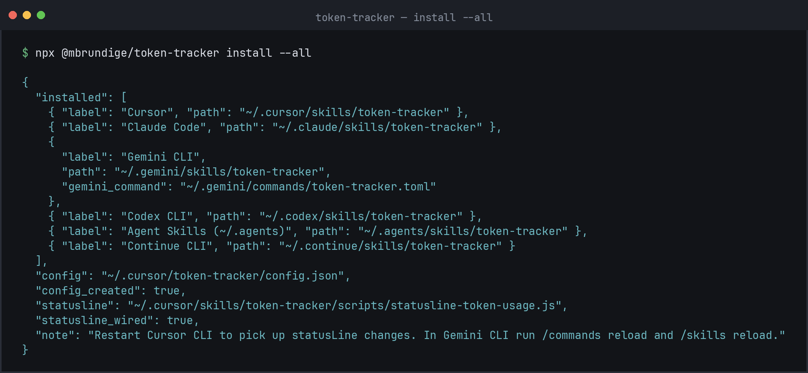
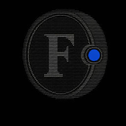
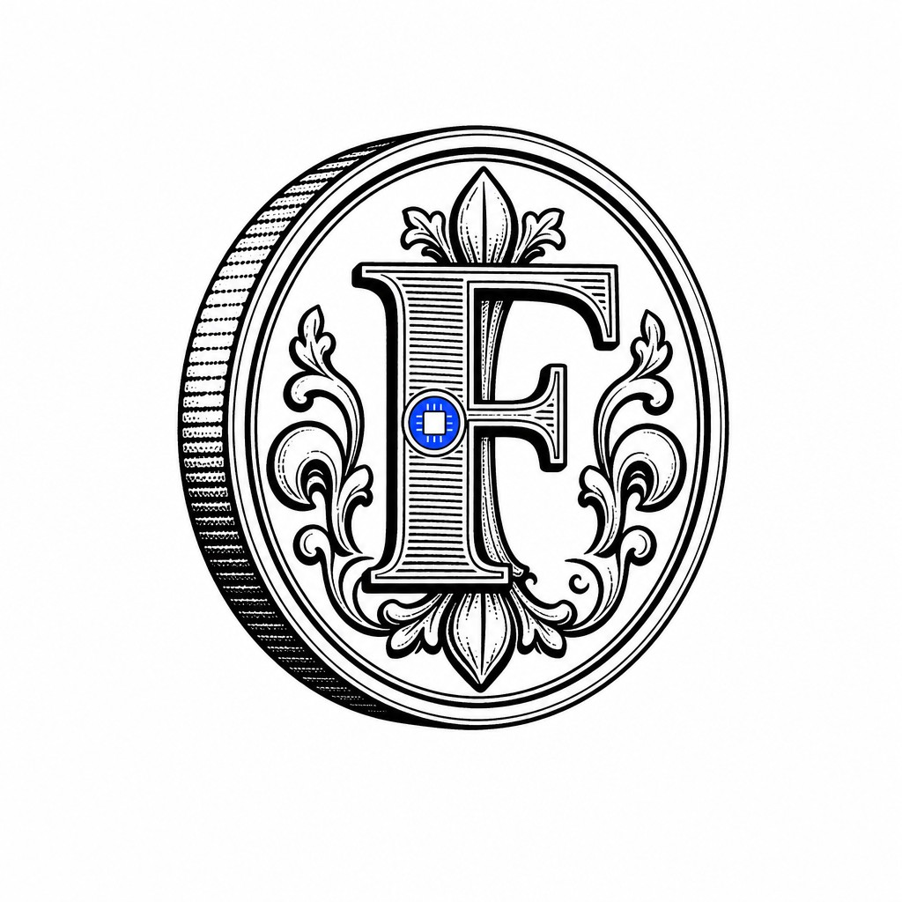
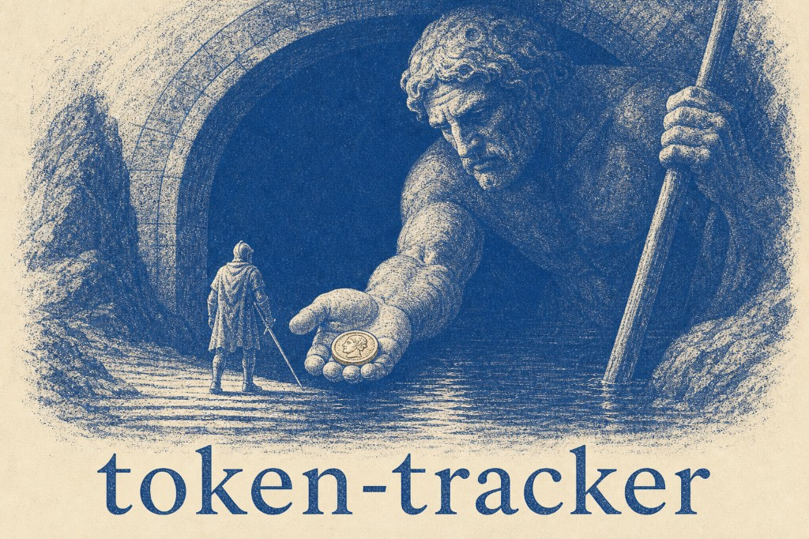
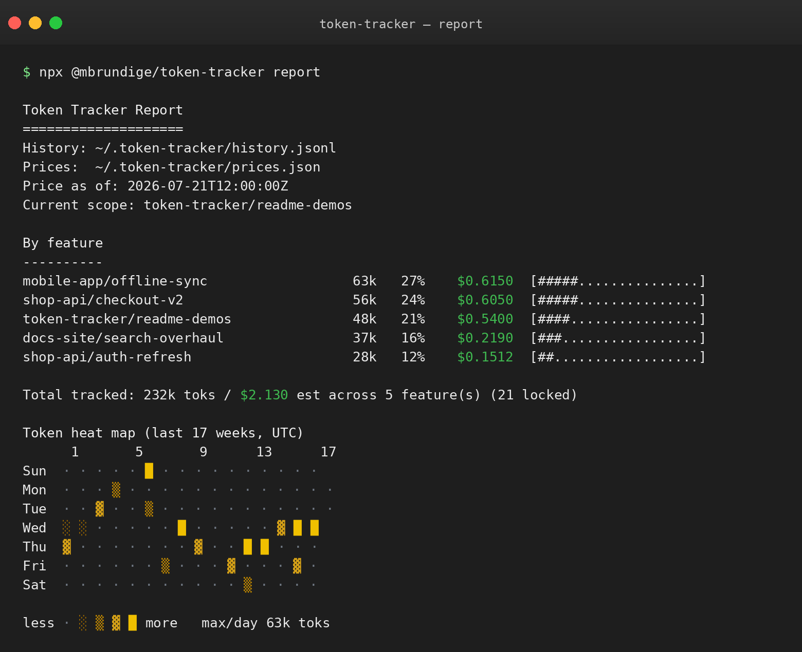
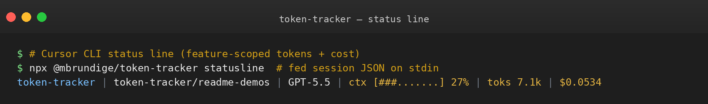

Local token usage tracking — one libro for AI spend across Cursor, Claude Code, Gemini CLI, Codex, Continue, and Agent Skills hosts.
Count every token. · flr · local


Quick install
npx @mbrundige/token-tracker install --all
Or pick hosts:
npx @mbrundige/token-tracker install --cursor --claude --gemini --codex
No npm dependencies. Shared data lives in ~/.token-tracker/ — every host feeds one history.

Supported hosts
| Flag | Host | |
|---|---|---|
| --cursor | Cursor |
| --claude | Claude Code |
| --gemini | Gemini CLI |
| --codex | Codex CLI |
 | --all | All hosts |
Why
AI sessions burn tokens across many threads, models, and side quests. Token Tracker answers:
- Where did the tokens go? Breakdown by
project/feature - What does this week look like? Daily heat map
- What am I burning right now? Optional Cursor CLI status line
Florence’s gold florin (fiorino d’oro) was Europe’s trusted settlement coin — a stable unit of account. token-tracker treats AI tokens the same way: one local ledger under ~/.token-tracker/, an F for fiorino, and a blue chip as the assay mark that the count lives on your machine.


Features
- One-command install into Cursor, Claude, Gemini, Codex, Continue, Agent Skills
- Shared history across hosts
- Feature-scoped status line + estimated cost
- Zero runtime deps — Node.js 22+

